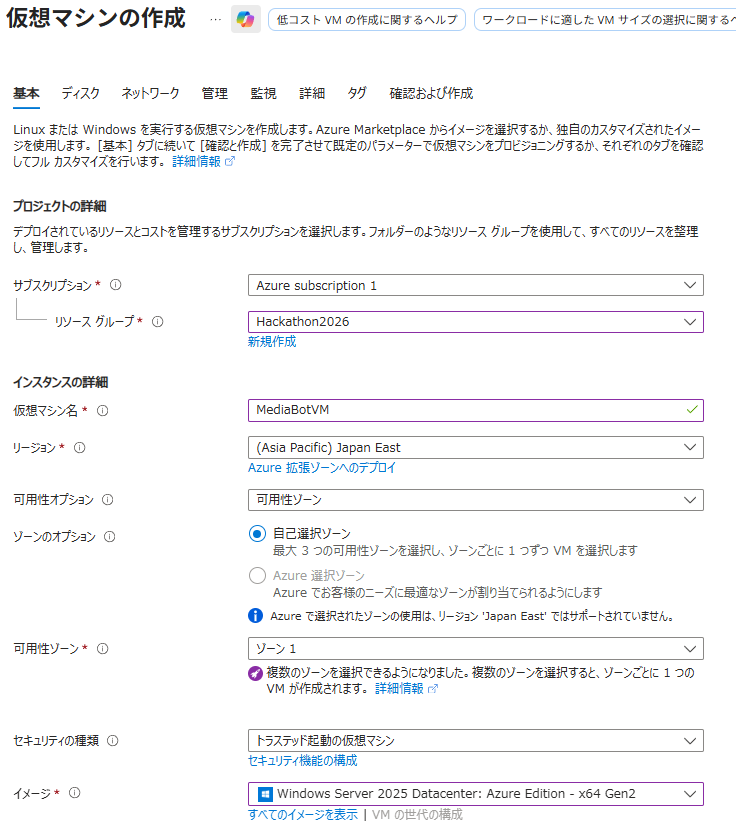
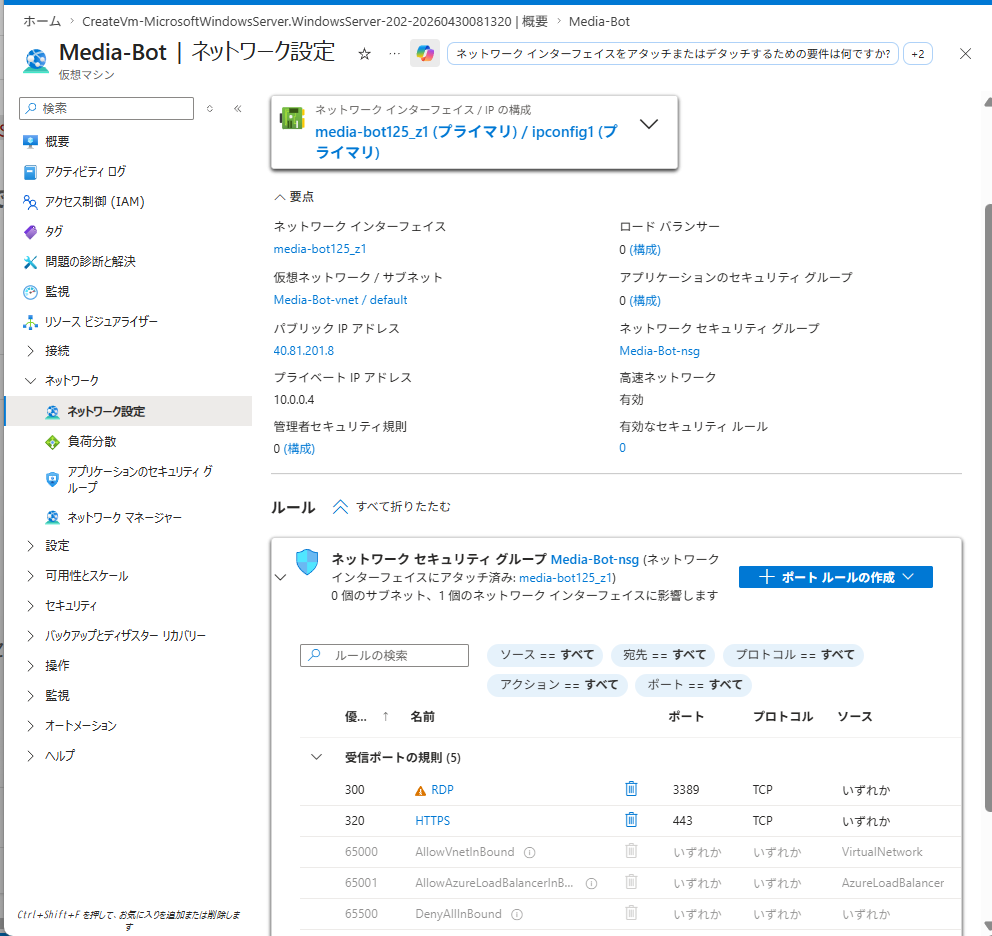
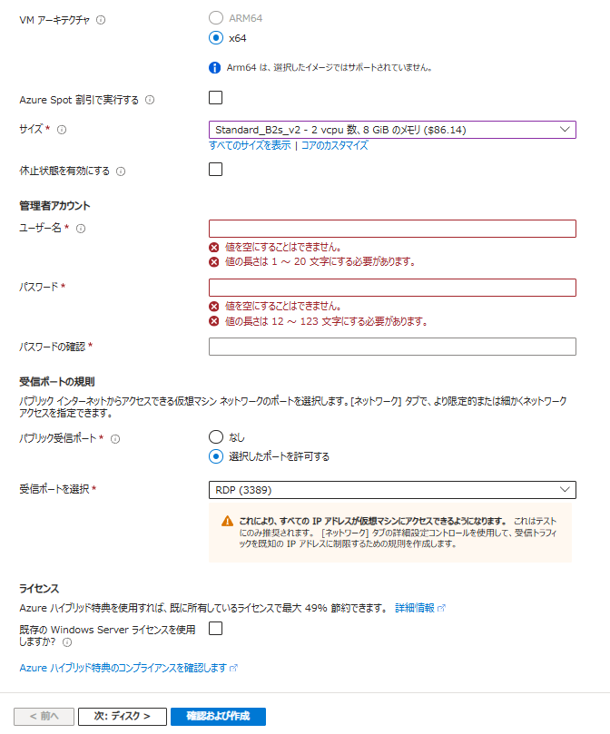
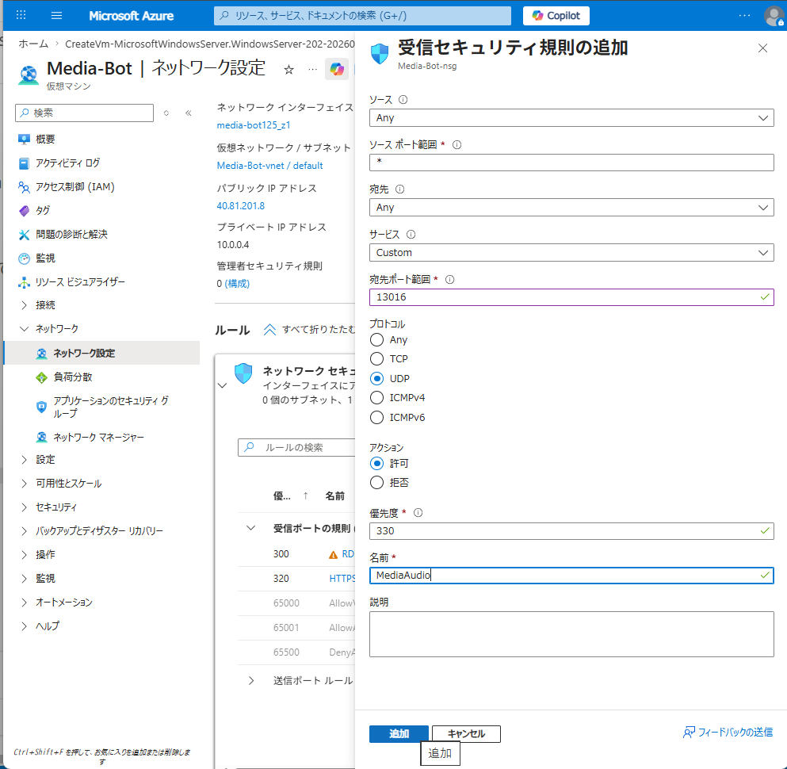

Teams 音声会議への参加・STT・GPT-4o 応答 実装ガイド（C# / .NET Framework 4.8）
Teams 会議に Bot としてリアルタイム参加し、参加者の音声を受信・文字起こし・AI 応答できるアーキテクチャを理解します。会社の実装と同じ構成です。
| 比較項目 | Application Hosted Media Bot | ACS Call Automation |
|---|---|---|
| 参加方法 | Graph Communications SDK 経由で Teams 会議に参加 | ACS 経由でコールに参加 |
| 音声処理 | ボット自身が音声を受信・処理（Application Hosted） | Azure のクラウド側で処理 |
| 言語 | C#（.NET Framework 4.8）のみ | Python / C# / Java 等 |
| OS | Windows 必須（Media SDK が Windows DLL） | どこでも動く |
| 柔軟性 | 音声バイト列に直接アクセス可能（高い） | Azure 側の処理に依存（低い） |
Microsoft.Graph.Communications.Calls.Media SDK は内部的に Windows 専用のネイティブ DLL（Microsoft.Skype.Bots.Media.dll 等）を使用しています。このため：
ターミナルで以下を実行してインストール済みか確認します：
dotnet --version # 8.x.x 以上が表示されればOK
インストールされていない場合は dotnet.microsoft.com/download から .NET SDK をダウンロードしてインストールしてください。
リポジトリのルートで以下を実行します：
mkdir MediaBot cd MediaBot dotnet new console
生成された MediaBot.csproj と Program.cs が出発点です。
生成された MediaBot.csproj を以下の内容に書き換えます：
<Project Sdk="Microsoft.NET.Sdk">
<PropertyGroup>
<TargetFramework>net48</TargetFramework>
<OutputType>Exe</OutputType>
<Nullable>enable</Nullable>
<ImplicitUsings>enable</ImplicitUsings>
<LangVersion>latest</LangVersion>
<Platforms>x64</Platforms>
<PlatformTarget>x64</PlatformTarget>
<AllowUnsafeBlocks>true</AllowUnsafeBlocks>
</PropertyGroup>
</Project>
| 設定 | 理由 |
|---|---|
net48 | Media SDK が .NET Framework 4.8 専用 |
PlatformTarget x64 | Media SDK のネイティブ DLL が x64 専用。これがないと BadImageFormatException が発生 |
AllowUnsafeBlocks | 音声バッファのアンマネージドメモリ操作に必要 |
LangVersion latest | net48 では C# 7.3 がデフォルト。nullable など最新構文を使うために必要 |
MediaBot.csproj の <ItemGroup> に以下を追加します：
<ItemGroup> <PackageReference Include="Microsoft.Graph.Communications.Client" Version="1.2.0.4161" /> <PackageReference Include="Microsoft.Graph.Communications.Calls.Media" Version="1.2.0.4161" /> <PackageReference Include="Microsoft.Graph" Version="4.54.0" /> <PackageReference Include="Microsoft.Identity.Client" Version="4.61.3" /> <PackageReference Include="Microsoft.CognitiveServices.Speech" Version="1.37.0" /> <PackageReference Include="Microsoft.Owin.SelfHost" Version="4.2.2" /> <PackageReference Include="Microsoft.AspNet.WebApi.OwinSelfHost" Version="5.3.0" /> <PackageReference Include="Unity.WebAPI" Version="5.4.0" /> </ItemGroup>
| パッケージ | 役割 |
|---|---|
Communications.Client | Teams とのシグナリング（誰が参加・退出など） |
Communications.Calls.Media | リアルタイム音声の受信（AudioSocket）。net48 専用の Windows DLL |
Microsoft.Graph 4.54.0 | Call / Modality / OrganizerMeetingInfo など Graph の型。5.x 系は不可（Graph.Core バージョン競合） |
Identity.Client | MSAL — Azure AD からアクセストークンを取得 |
CognitiveServices.Speech | Azure Speech SDK（STT / TTS） |
Owin.SelfHost | .NET Framework 用 Web サーバー（ASP.NET Core の代わり） |
WebApi.OwinSelfHost | REST API フレームワーク（ASP.NET Core の前身） |
Unity.WebAPI | DI コンテナ（ASP.NET Core の DI の代わり） |
Microsoft.Graph は 4.54.0 を指定してください。5.x 系は Graph.Core 3.x に依存しており、Communications SDK（Graph.Core 2.x 必須）と競合してビルドエラーになります。| ファイル | 役割・ポイント |
|---|---|
BotService.cs |
CommunicationsClientBuilder でクライアントを初期化。着信コールを受けて CallHandler を生成。
CreateMediaSession() は拡張メソッドで、第3引数 null の型曖昧性を IEnumerable<VideoSocketSettings>? noVideo = null で解消する必要がある。
|
AuthenticationProvider.cs |
IRequestAuthenticationProvider を実装。MSAL の ConfidentialClientApplicationBuilder でクライアント資格情報フローによりトークン取得。
ValidateInboundRequestAsync の戻り値は Task<RequestValidationResult>（Task ではない）。
|
CallHandler.cs |
AudioSocket.AudioMediaReceived に登録した OnAudioMediaReceived が 20ms ごとに呼ばれる。
Marshal.Copy(buffer.Data, data, 0, length) で IntPtr からバイト列に変換（unsafe 不要）。
バッファは必ず args.Buffer.Dispose() する（アンマネージドメモリのため GC が回収しない）。
|
TranscriptionService.cs |
PushAudioInputStream を使って PCM データを受け取る Speech セッションを作成。
音声フォーマット: 16kHz / 16bit / モノラル（Teams の出力形式に合わせる）。
|
ConversationTest.cs | Teams なしで STT → GPT-4o → TTS のフルループをローカルテストするクラス。 Azure OpenAI は追加 SDK なし、HttpClient の REST 呼び出しで実装。 |
{
"AppSettings": {
"AzureAdTenantId": "（Azure AD テナント ID）",
"AzureAdAppId": "（アプリ登録のアプリケーション ID）",
"AzureAdAppSecret": "（クライアントシークレット）",
"BotBaseUrl": "（Azure VM の HTTPS URL または Dev Tunnel URL）",
"SpeechKey": "（Azure Speech Services のキー）",
"SpeechRegion": "japaneast",
"AzureOpenAiKey": "（Azure OpenAI / Foundry のキー）",
"AzureOpenAiEndpoint": "https://（リソース名）.openai.azure.com/",
"AzureOpenAiDeployment": "gpt-4o"
}
}
appsettings.json はキーを含むため、.gitignore で除外してください。Teams の音声（PCM 16kHz）をリアルタイムでテキストに変換するために Azure Speech Services を使います。STT（Speech to Text）と TTS（Text to Speech）の両方を提供します。
リソースグループ: 既存のもの（例: Hackathon2026） リージョン: Japan East 名前: 任意（例: Media-Bot-test） 価格レベル: F0（無料 — 5時間/月まで）
SpeechRegion に使います。MediaBot/appsettings.json を開き、STEP 5 で取得したキーを設定します：
"SpeechKey": "（Speech Services のキー 1）", "SpeechRegion": "japaneast",
Azure Portal の Foundry リソース（Hackathon202604 等）→「キーとエンドポイント」→「OpenAI タブ」で取得します：
"AzureOpenAiKey": "（Foundry の OpenAI キー）", "AzureOpenAiEndpoint": "https://（リソース名）.openai.azure.com/", "AzureOpenAiDeployment": "gpt-4o",
cd MediaBot dotnet build
Media SDK のネイティブ DLL が x64 専用のため、プロセスが x86 で起動すると発生します。
対処: MediaBot.csproj の <PropertyGroup> に以下を追加：
<PlatformTarget>x64</PlatformTarget>
Microsoft.Graph 5.x は Graph.Core 3.x に依存しますが、Communications SDK は Graph.Core 2.x を要求するため競合します。
対処: Microsoft.Graph のバージョンを 4.54.0 に固定します。
ValidateInboundRequestAsync の戻り値型は Task ではなく Task<RequestValidationResult> です。
// 正しい実装
public Task<RequestValidationResult> ValidateInboundRequestAsync(HttpRequestMessage request)
{
return Task.FromResult(new RequestValidationResult { IsValid = true });
}
第3引数に null を渡すと、IEnumerable<VideoSocketSettings> と VideoSocketSettings のオーバーロードが曖昧になります。
// 型付き変数で明示的に指定する
IEnumerable<VideoSocketSettings>? noVideo = null;
var mediaSession = _client.CreateMediaSession(
audioSettings, noVideo, null, null, Guid.NewGuid());
dotnet build # → 0 個の警告、0 エラー が表示されれば完了
Teams なしで Azure Speech SDK の文字起こしが正しく動作することを確認します。Teams から届く音声は PCM 16kHz のバイト列で、このテストでは同じ形式の音声をマイクから取得して動作を検証します。
PowerShell（管理者不要） で実行します（dotnet run ではなく exe を直接実行する点に注意）：
cd MediaBot dotnet build .\bin\Debug\net48\MediaBot.exe --speech-test
dotnet run ではなく .\bin\Debug\net48\MediaBot.exe を使ってください。dotnet run は appsettings.json の読み込みパスが変わります。また、PowerShell から実行することで Enter キー問題も発生しません。━━━━━━━━━━━━━━━━━━━━━━━━━━━━ 🎤 モード A: マイクテスト ━━━━━━━━━━━━━━━━━━━━━━━━━━━━ マイクに向かって日本語で話してください。 Enter を押すと停止します。 [認識中] こんにちは [確定 ✅] こんにちは、今日はいい天気ですね。
「認識中」→「確定 ✅」の流れで文字起こしが表示されれば成功です。
Teams ボットのコア処理（音声認識 → AI 応答生成 → 音声合成）をローカル環境で完全に動作確認します。これが動けば、Teams 接続部分（インフラ）を整えるだけで本番ボットになります。
appsettings.json の SpeechKey と AzureOpenAiKey が設定済みであること.\bin\Debug\net48\MediaBot.exe --chat-test
ja-JP-NanamiNeural）が流れてくる| 処理 | このテスト | Teams 本番 |
|---|---|---|
| 音声入力 | FromDefaultMicrophoneInput()（マイク） | PushAudioInputStream（Teams 音声） |
| AI 応答 | CallGptAsync() ← 同じコード | CallGptAsync() ← 同じコード |
| 音声出力 | FromDefaultSpeakerOutput()（スピーカー） | AudioSocket への PCM 送信（要実装） |
STEP 9 までで会話コアが動作確認できました。本物の Teams 会議に参加させるには以下が必要です：
| 作業 | 場所 | 難易度 |
|---|---|---|
Azure AD アプリ登録（Calls.AccessMedia.All 等の権限） | Azure Portal | ★★☆ |
| Azure Windows VM の作成（B2s 以上、パブリック IP 付き） | Azure Portal | ★★☆ |
| UDP ポート 13016 の開放（NSG 設定） | Azure Portal | ★☆☆ |
appsettings.json の BotBaseUrl を VM の FQDN に設定 | コード | ★☆☆ |
| TTS → AudioSocket 送信（ボットが Teams に向けて話す） | コード | ★★★ |
MediaBot が Teams 会議に参加し音声を受信するには、Azure AD（Entra ID）でアプリを登録し、Teams Calling API の権限を付与する必要があります。これは「Bot の身分証明書」を作る作業です。
名前: MediaBot（任意） サポートされるアカウントの種類: この組織ディレクトリのみ リダイレクト URI: （空白でOK）
アプリケーション（クライアント）ID → AzureAdAppId ディレクトリ（テナント）ID → AzureAdTenantId
左メニュー「API のアクセス許可」→「+ アクセス許可の追加」→「Microsoft Graph」→「アプリケーションの許可」で以下を追加：
| 権限名 | 用途 |
|---|---|
Calls.AccessMedia.All | 会議の音声ストリームへのアクセス（必須） |
Calls.Initiate.All | 1対1コールの発信 |
Calls.InitiateGroupCall.All | グループコールの発信 |
Calls.JoinGroupCall.All | グループ会議への参加（必須） |
Calls.JoinGroupCallAsGuest.All | ゲストとして会議参加 |
追加後、「（テナント名）に管理者の同意を与えます」ボタンをクリックして管理者同意を付与します。
401 Unauthorized エラーになります。MediaBot-2026）、有効期限: 24か月コピーした値 → AzureAdAppSecret に設定
Media SDK は Windows 専用の DLL を使うため、実行環境として Azure Windows VM が必要です。Teams からの UDP 音声パケットを直接受信するために、パブリック IP アドレス付きの VM を作成します。
リソースグループ: 既存のもの（例: Hackathon2026） 仮想マシン名: Media-Bot（任意） リージョン: Japan East（東日本） 可用性オプション: インフラストラクチャ冗長は必要ありません イメージ: Windows Server 2025 Datacenter Azure Edition（x64、Gen2） サイズ: Standard_D2s_v3（2 vCPU / 8 GB RAM）
Standard_D2s_v3 を選んでください。また、イメージはデフォルトが Ubuntu になっている場合があるので必ず Windows Server を選択します。

40.81.201.8）
Teams は音声（メディア）データを SRTP / UDP で送信します。Bot が音声を受信するには UDP ポート 13016 を NSG（ネットワークセキュリティグループ = AWS の Security Group 相当）で開放する必要があります。
ソース: Any ソースポート範囲: * 宛先: Any 宛先ポート範囲: 13016 プロトコル: UDP アクション: 許可 優先度: 330（既存ルールと被らない値） 名前: MediaAudio

| 概念 | Azure | AWS |
|---|---|---|
| ファイアウォール | NSG（Network Security Group） | Security Group |
| 適用対象 | サブネット or NIC（ネットワークアダプタ） | インスタンス |
| ルール評価 | 優先度の数字が小さいほど先に評価 | 全許可ルールが合算 |
Teams の Webhook コールバックに使う BotBaseUrl は固定の URL が必要です。VM に DNS 名（FQDN）を設定することで、IP アドレスが変わっても同じ URL でアクセスできます。また、TLS 証明書の取得にも DNS 名が必要です。
media-bot-2026）設定後の FQDN 例: media-bot-2026.japaneast.cloudapp.azure.com これが BotBaseUrl の値になる: "BotBaseUrl": "https://media-bot-2026.japaneast.cloudapp.azure.com"
ローカル PC でビルドした MediaBot の実行ファイル（.exe と DLL 群）を VM に転送するために、RDP のドライブ共有機能を使います。VM 側に .NET SDK をインストールしてビルドするより、ローカルでビルド済みのバイナリをコピーする方が確実で速いです。
.rdp ファイルを開くRDP セッションからローカル PC のドライブにアクセスするには、接続前にドライブ共有を有効にする必要があります：
ローカル PC でビルドした net48\ フォルダ（MediaBot.exe + 全 DLL）を VM にコピーします。VM 上で .NET SDK のインストールや dotnet build は不要で、.NET Framework 4.8 は Windows Server 2025 に標準搭載されています。
C:\Users\（ユーザー名）\Hackathon202604\MediaBot\bin\Debug\net48\
このフォルダに含まれる主要ファイル：
| ファイル | 役割 |
|---|---|
MediaBot.exe | エントリポイント（実行ファイル） |
MediaBot.exe.config | .NET Framework 設定 |
Microsoft.Skype.Bots.Media.dll | Teams 音声処理ネイティブ DLL（Windows x64 専用） |
Microsoft.Graph.Communications.*.dll | Graph Communications SDK |
Microsoft.CognitiveServices.Speech.core.dll | Azure Speech SDK ネイティブ DLL |
その他の *.dll | NuGet パッケージの依存ライブラリ |
Users\（ユーザー名）\Hackathon202604\MediaBot\bin\Debug\net48\ フォルダを開くnet48 フォルダを選択して Ctrl+C（コピー）C:\ に移動して Ctrl+V（貼り付け）MediaBot にリネーム（任意）C:\MediaBot\MediaBot.exe が存在すれば準備完了です。VM 上の C:\MediaBot\ フォルダに appsettings.json を作成します（ローカルのものをコピーしてもOK、ただし BotBaseUrl は変更が必要）：
{
"AppSettings": {
"AzureAdTenantId": "（STEP 11 でメモしたテナント ID）",
"AzureAdAppId": "（STEP 11 でメモしたアプリ ID）",
"AzureAdAppSecret": "（STEP 11 で作成したシークレット値）",
"BotBaseUrl": "https://（STEP 14 で設定した FQDN）",
"SpeechKey": "（Azure Speech Services のキー）",
"SpeechRegion": "japaneast",
"AzureOpenAiKey": "（Azure OpenAI キー）",
"AzureOpenAiEndpoint": "https://（リソース名）.openai.azure.com/",
"AzureOpenAiDeployment": "gpt-4o",
"CertificateThumbprint": "（TLS 証明書のサムプリント）"
}
}
BotBaseUrl はローカル用の設定と異なります。STEP 14 で設定した VM の FQDN（https://xxx.japaneast.cloudapp.azure.com）を入力してください。| 作業 | 詳細 | 状態 |
|---|---|---|
| TLS 証明書の取得 | Let's Encrypt（certbot）または自己署名証明書を VM にインストール | ⬜ 未実施 |
| HTTPS ポート 443 のバインド | netsh http add sslcert でポート 443 と証明書を紐付け | ⬜ 未実施 |
| Azure Bot Service 登録 | Azure Portal で Bot Service リソースを作成、Webhook URL を VM の FQDN に設定 | ⬜ 未実施 |
| MediaBot.exe の起動テスト | C:\MediaBot\MediaBot.exe を VM 上で実行し、Teams から招待して音声受信を確認 | ⬜ 未実施 |
| TTS → AudioSocket 送信 | Bot が Teams に向けて話す処理の実装（CallHandler.cs に追記） | ⬜ 未実施 |
| VM の削除 | 動作確認後、コスト削減のため VM を削除 | ⬜ 未実施 |
BotService.cs の MediaPlatformSettings の CertificateThumbprint を空にして、HTTP のポート 80 でまず起動を確認する方法もあります（ただし本番では必ず HTTPS が必要）。